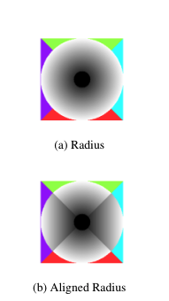

How does our System Work?
User Set up
Setting up ECWheel is very easy. Initially, 3 modules are needed to be set up on the wheelchair in order to get things working: Motor Unit, Sensor Modules and the UI module. You don't need to worry about batteries, as batteries are already packed into the device. Although, the batteries, are rechargeable, please keep in mind that the system does not contain the recharging module for the batteries and they need to be removed from the system to be charged externally.
Motor Unit
The Motor Unit comes pre-assembled with all the core components inside, hence the only required assembly for the Unit is to attach it to the frame of the wheelchair. The Motor Unit is designed to clamp on the wheelchairs with 25mm frame diameter only.
The Assembly parts are listed below:
- Part A - 6x M3D Clamp A
- Part B - 6x M3D Clamp B (Non-Removable, comes as a part of Drive Unit)
- Part C - 12x Screws M6x20
Steps:
- Align the Unit along the frame of the wheelchair, while attaching Part A to Part B and inserting Part C inside the screw holes.
- Tighten the screws with an allen key clockwise for solid mount.
- Repeat steps 1-2 for every mount.

Sensor Modules
There are 2 Sensor Module configurations: one for the front-left leg and front-right leg.
- Part A - 2x Sensor with Clamp A
- Part B - 2x Clamp B
- Part C - 4x Screws
- Part D - 2x Sensor with Bracket
Steps:
- Align Part A along the front leg of the wheelchair so that the sensor faces forwards and connector facing downwards.
- Align Part D so it faces sideways with the connector facing downwards.
- Insert screws and tighten the module as shown on the right.
- Connect the ribbon cables from the Motor Unit to each of the sensors (not shown).
UI Module
The UI Module needs to be attached towards the edge of the right arm frame for ergonomic experience. Place it at a position where you are comfortable using.
- Part A - 1x Touchpad with vertical support piece
- Part B - 2x M3D Clamp
- Part C - 4x Screws 6x20
Steps:
- Align the module along the frame.
- Use Screws to secure clamps. See the image below.
TrackPad

The user will use the TrackPad to control the entire wheelchair. It's broken down into 3 parts: TrackPad Input, Control Switches and the Wrist Rest.
The Control Switches compromises of 4 buttons:
- I/O - toggles the entire system on or off
- ACC - toggles Assistive Cruise Control
- COL - toggles the Collision (Object) Detection System
- SOS - Sends a SOS signal to a SOS network
How to use:
- Set I/O switch to I position
- (Optional) Toggle the COL
- (Optional) Toggle the ACC
- Provide input to the trackpad circle
In order to end the session (turn off the system), set the I/O switch to O to stop the system.
Collision Detection System (CDS)
Once the CDS is enabled, by the backward and forward-facing sensors, the wheelchair will be slowed down proportionally to the distance from the closest sensor to an obstacle provided the input direction and the sensor direction are the same. After a certain time, the system won't allow the wheelchair to move unless the obstacle is removed. However, the user will be able to move the wheelchair in the opposite direction with aim to turn the wheelchair around and move to a different direction, away from the obstacle.
We use the GP2Y0A02YK0F sensors for CDS. These sensors provide us with adequate range for our applications and have the advantage of maintaining low power consumption, with a current draw of only 33mA.
Keep in mind that CDS has to be disabled while trying to go up or go down a slope as CDS might interpret the surface as an obstacle.
Assistive Cruise Control
When a user toggles ACC, the wheelchair starts moving forward with a constant speed until either the user toggles the ACC button again or provides any input on the trackpad circle, whereas ACC will be turned off automatically. Both Cruise Control System and Collision Detection System work in tandem to ensure safety for the user while they are moving forwards.
TrackPad Input
The TrackPad Input lies on the top of the TrackPad with sole purpose, to direct and move the wheelchair. The way it works is by detecting the location of the "press" on the button.
By pressing on a different position on the button, the according degree of angle (North is 0˚) will be inputted and the wheelchair will be directed accordingly. Of course, keep in mind that the speed of rotation varies depending on how far the finger is pressed from the centre of the button. As shown below, the "whiter" the area of where the finger is pressed is, the faster it will turn to that direction, while the closer to the centre (the darker), the slower the process.
SOS Module
The SOS system is responsible for managing and displaying requests for help made from wheelchairs. There are two main classes of request:
- Urgent: used for issues with the wheelchair such as falling over or running out of battery.
- Normal: used for requests for help made by residents through the wheelchair.
These requests will be displayed by the monitor unit in the form of highlighting the area the request was made from on a plan of the building. Urgent requests will be highlighted in red and normal requests will be highlighted in orange.
The central hub serves as a monitoring server for the staff, where all the requests will be shown on a GUI, together with the approximate position of the requesting user. This will consist of an ESP-32 paired to Raspberry Pi using serial. This setup is required despite the wireless capabilities of the Pi. Them, a mesh network is created using ESP-32s placed throughout the environment to provide the link between the wheelchair modules and the hub. These act both as relays for the network and as location markers to approximate a user's location.
As the Wheelchair isn't directly connected to the hub, once the SOS button is pressed, the signal is passed through the ESP-32's (also called relays) where the signal will eventually end up to the Raspberry Pi (hub) showing the information on the display.
Below, a quick illustration of how this process works.
GUI
The monitoring device comes preinstalled and preconfigured with all the software needed for the SOS system. The monitoring system is operated by a Raspberry Pi. The only setup steps required will be to plug the device into a monitor, a mouse and keyboard and to provide a .png image of the floor plan of the environment, called plan.png, using a USB which you will plug into the device at setup time.
Relays (ESP-32 units) need to be placed around the care home ensuring that each relay can be seen by at least another relay visually.
Set Up
Once the relays are placed, they are going to be added manually by the nurses by following the following steps:
- From the control panel, select “Configure Nodes”.
- From the Node Configuration panel, select “Add node” to enter node registration mode.
- Enter the node name and select the location of the node on the map screen. Press OK to confirm selection.
- Once the node has been registered, a confirmation message will be displayed. Several nodes can be added at this stage by repeating steps 2 and 3 for each device.
- Close the Node Details window. The available nodes should be displayed in the “Node Name” list.
Of course, for more information when it comes to installation of the monitor device, please refer to our user guide.
Requests
When a user makes a request, then the requesting device name will be displayed under the list “User Name” on the control panel as shown below
The map screen will highlight all of the relays that can directly see the requesting wheelchair. This will result in all the nearby relays being highlighted providing a rough location of the wheelchair. This is achieved using a floor-plan of the home with black markers superimposed representing the relays.
As shown below, the red nodes are the ones indicating that a request has been passed from them and hence, the wheelchair user is nearby. Urgent requests will be highlighted in red and normal requests will be highlighted in orange. In this case, all requests are classified as "urgent".
When a request is received, a button will appear with the option to dismiss the currently selected request and stop being displayed on the map. This should be clicked once the request has been responded to.
Urgent Requests
Urgent requests for help are made automatically in the event of a wheelchair fall being detected or the wheelchair running out of battery. In such a scenario, the nodes on the map will be displayed with red.